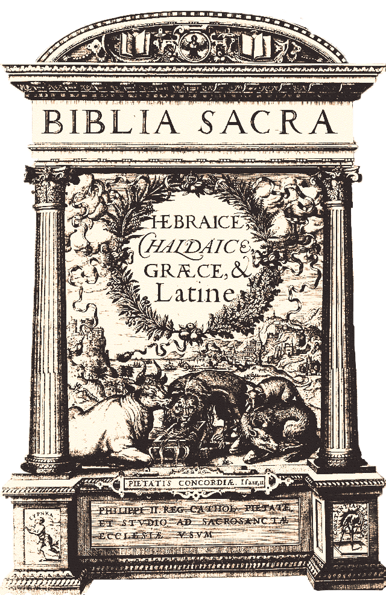

a printer's dance with Heresey
A printers dance with
A printers dance with
The year is 1574. Antwerp, a city thriving on trade and ideas, is tense with religious conflict .
Officially Catholic, it hides a network of thinkers and groups who challenge traditional beliefs.
At the center of this world is the Plantin Press, Europe’s most famous printing house, run by Christophe Plantin. Renowned for his skill and piety, Plantin seems untouchable, or does he?
Rumors suggest Plantin may be more than a loyal Catholic. Whispers claim he is connected to the Family of Love, a secretive religious group accused of heresy by both Catholics and Protestants.
A Risky Connection
The Family of Love was founded in the 16th century by Hendrik Niclaes, a Dutch merchant turned religious leader. The group believed in spiritual enlightenment, rejected organized religion , and focused on love and unity.
Several pieces of evidence hint at Plantin’s ties to the Family of Love. While none prove his guilt outright, together they raise questions about his beliefs and actions.
I
author: “anonymous”
Plantin’s press often printed books without clear authorship. Many of these works contained themes of love and inner spirituality, ideas associated with the Family of Love.
Some titles in his records were later linked to the sect, even though they didn’t openly challenge Catholic teachings.
For example, Plantin printed devotional books that avoided political or religious disputes. These texts mirrored the Family of Love’s focus on peace and inner faith.
II
Plantin was friends with Abraham Ortelius, a famous cartographer who was rumored to sympathize with the Family of Love.
Their close friendship suggests Plantin may have shared or tolerated these beliefs.
III
Plantin’s ties to the Family of Love may have been motivated by both personal beliefs and business interests. The sect’s ideas about peace and spiritual love may have appealed to him, especially in a time of religious violence.
On a practical level, Antwerp was full of religious refugees and dissenters. Printing texts for groups like the Family of Love could have been a profitable venture, even if it meant taking risks.
Despite the suspicions, Plantin managed to avoid severe punishment. His greatest defense was the Polyglot Bible, a massive project funded by King Philip II of Spain.
Latin
Hebrew
Greek
Aramaic
This masterpiece, completed in 1573, showcased Plantin’s loyalty to the Catholic Church. It included texts in Hebrew, Greek, Latin, and Aramaic and was seen as a triumph of Catholic scholarship.
The Polyglot Bible’s success protected Plantin’s reputation. It allowed him to keep his position as Royal Printer, even as questions about his other activities lingered.
➞ More about the polyglot bibleWas Christophe Plantin a secret supporter of the Family of Love, or was he simply a clever businessman willing to take risks? The truth remains unclear. His connections, printing choices, and ability to avoid punishment suggest a man deeply involved in the religious and intellectual debates of his time.
What is certain is that Plantin was no ordinary printer. He was a survivor, balancing faith, business, and secrecy in a time when a single misstep could cost everything.
What do you think? Was he innocent, or was he guilty?